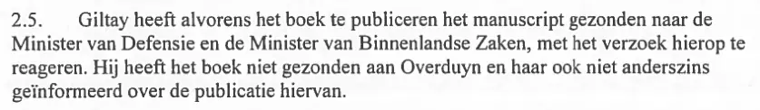
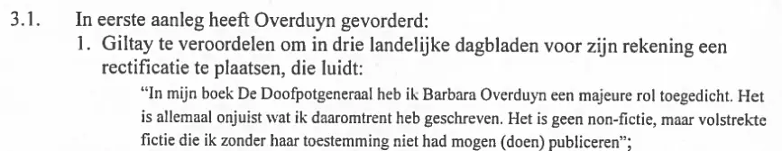
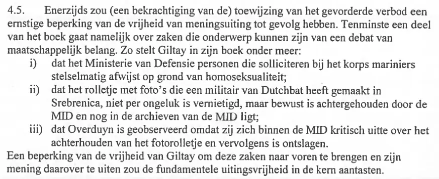
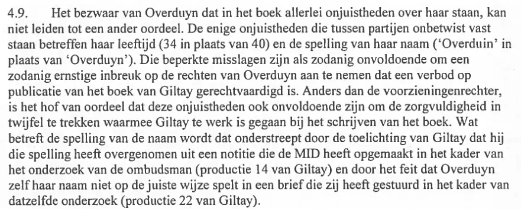
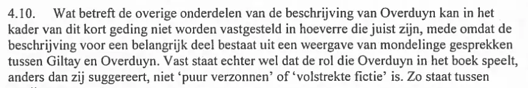
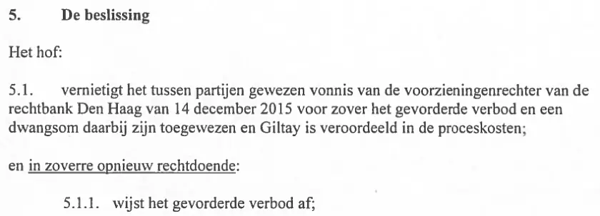
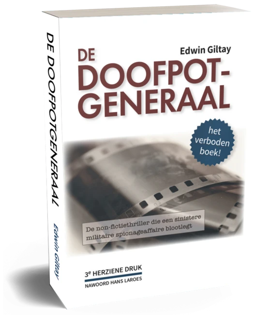

Bewijsstuk · Uitspraak
Het essay haalt dit arrest op negen plaatsen aan, voor vijf verschillende rechtsoverwegingen, en de biografie op twee; de stemmensectie citeert daarnaast het dictum. De passages staan hieronder in de volgorde van het arrest, elk met een eigen link en een uitsnede uit de pagina zelf. Aangehaald is het gewaarmerkte afschrift, dat de partijen bij naam noemt. De versie die deeplink.
“Giltay heeft alvorens het boek te publiceren het manuscript gezonden naar de Minister van Defensie en de Minister van Binnenlandse Zaken, met het verzoek hierop te reageren.” Pagina 2 van het gewaarmerkte afschrift. Door het hof vastgesteld als feit, tussen partijen niet in geschil.

“Giltay te veroordelen om in drie landelijke dagbladen voor zijn rekening een rectificatie te plaatsen, die luidt: “In mijn boek De Doofpotgeneraal heb ik Barbara Overduyn een majeure rol toegedicht. Het is allemaal onjuist wat ik daaromtrent heb geschreven. Het is geen non-fictie, maar volstrekte fictie die ik zonder haar toestemming niet had mogen (doen) publiceren”” Pagina 3 van het gewaarmerkte afschrift, de eerste van drie vorderingen in eerste aanleg. De voorzieningenrechter wees die af en daartegen is geen hoger beroep ingesteld (r.o. 4.1).

“Tenminste een deel van het boek gaat namelijk over zaken die onderwerp kunnen zijn van een debat van maatschappelijk belang. Zo stelt Giltay in zijn boek onder meer: i) dat het Ministerie van Defensie personen die solliciteren bij het korps mariniers stelselmatig afwijst op grond van homoseksualiteit; ii) dat het rolletje met foto’s die een militair van Dutchbat heeft gemaakt in Srebrenica, niet per ongeluk is vernietigd, maar bewust is achtergehouden door de MID en nog in de archieven van de MID ligt; iii) dat Overduyn is geobserveerd omdat zij zich binnen de MID kritisch uitte over het achterhouden van het fotorolletje en vervolgens is ontslagen. Een beperking van de vrijheid van Giltay om deze zaken naar voren te brengen en zijn mening daarover te uiten zou de fundamentele uitingsvrijheid in de kern aantasten.” Pagina 5 van het gewaarmerkte afschrift. Het hof stelt niet vast dat de stellingen juist zijn, maar dat het aankaarten ervan onder de uitingsvrijheid valt.

“Het bezwaar van Overduyn dat in het boek allerlei onjuistheden over haar staan, kan niet leiden tot een ander oordeel. De enige onjuistheden die tussen partijen onbetwist vast staan betreffen haar leeftijd (34 in plaats van 40) en de spelling van haar naam (‘Overduin’ in plaats van ‘Overduyn’). Die beperkte misslagen zijn als zodanig onvoldoende om een zodanig ernstige inbreuk op de rechten van Overduyn aan te nemen dat een verbod op publicatie van het boek van Giltay gerechtvaardigd is. Anders dan de voorzieningenrechter, is het hof van oordeel dat deze onjuistheden ook onvoldoende zijn om de zorgvuldigheid in twijfel te trekken waarmee Giltay te werk is gegaan bij het schrijven van het boek. Wat betreft de spelling van de naam wordt dat onderstreept door de toelichting van Giltay dat hij die spelling heeft overgenomen uit een notitie die de MID heeft opgemaakt in het kader van het onderzoek van de ombudsman (productie 14 van Giltay) en door het feit dat Overduyn zelf haar naam niet op de juiste wijze spelt in een brief die zij heeft gestuurd in het kader van datzelfde onderzoek (productie 22 van Giltay).”
Pagina 6 van het gewaarmerkte afschrift. De versie op deeplink.

“Vast staat echter wel dat de rol die Overduyn in het boek speelt, anders dan zij suggereert, niet ‘puur verzonnen’ of ‘volstrekte fictie’ is.” Pagina 6 van het gewaarmerkte afschrift. Het hof weerlegt hier Overduyns suggestie dat haar rol volstrekte fictie is. Dezelfde bewering stond in de rectificatie die zij in eerste aanleg vorderde (r.o. 3.1). De rechtsoverweging somt daarna de feiten op waarin de beschrijving ten minste gedeeltelijk steun vindt.

“Het hof: 5.1. vernietigt het tussen partijen gewezen vonnis van de voorzieningenrechter van de rechtbank Den Haag van 14 december 2015 voor zover het gevorderde verbod en een dwangsom daarbij zijn toegewezen en Giltay is veroordeeld in de proceskosten; en in zoverre opnieuw rechtdoende: 5.1.1. wijst het gevorderde verbod af;” Pagina 7 van het gewaarmerkte afschrift, onder de kop ‘De beslissing’. De rest van het dictum gaat over de proceskosten en bekrachtigt voor het overige het vonnis, dat de gevorderde rectificatie en het voorschot op schadevergoeding al had afgewezen.

Op 12 april 2016 deed het Gerechtshof Den Haag uitspraak: het hief zowel het volledige verbod op De doofpotgeneraal als het spreekverbod voor de auteur op. In r.o. 4.9 oordeelde het dat de enige twee onbetwiste onjuistheden, een leeftijd en de spelling van een naam, ook onvoldoende waren om de zorgvuldigheid in twijfel te trekken waarmee de auteur bij het schrijven van het boek te werk was gegaan.
De eiseres, een oud-medewerkster van de Militaire Inlichtingendienst (MID) die in het boek voorkomt, had ook geëist dat Giltay zijn eigen werk in drie landelijke dagbladen als volstrekte fictie zou bestempelen. Het hof stelde vast dat haar rol in het boek niet ‘puur verzonnen’ of ‘volstrekte fictie’ is, en wees het gevorderde verbod af.

Deze pagina is een bewijsstuk bij het boek De doofpotgeneraal van Edwin Giltay en de bijbehorende website.